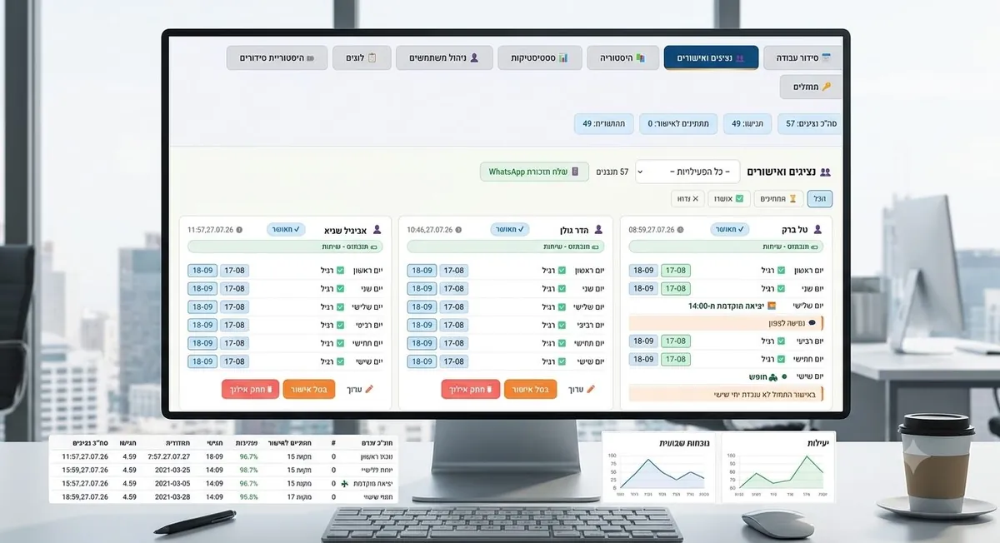

סידור עבודה בגיליון אקסל עבד טוב כל עוד היה סניף אחד. ברגע שנפתח סניף שני, ואז שלישי, המנהל מוצא את עצמו מנהל כמה גיליונות נפרדים, מנסה לזכור מי זמין איפה, ומגלה שעובד שאמור היה לכסות משמרת בסניף אחד רשום בטעות גם בסניף אחר באותה שעה.
הבעיה: מה שעבד לסניף אחד קורס עם כמה סניפים
ניהול ידני של סידור עבודה כבר דורש תשומת לב רבה לסניף בודד. כשמתווספים סניפים, הבעיה לא רק מוכפלת — היא משתנה באופיה: צריך לדעת מי יכול לעבוד באיזה סניף, למנוע כפל שיבוץ בין סניפים, ולשמור על תמונה כוללת של כל הצוות בכל המיקומים בו-זמנית. זה בדיוק המקום שבו גיליונות נפרדים מתחילים להתפרק.
הפתרון: תמונה אחת לכל הסניפים
זו בדיוק הבעיה ש-A.L Systems, בניהולו של אדיר לוי משדרות, בנתה עבורה את ShiftSync — מערכת סידור עבודה שמנהלת את כל הסניפים מתוך מערכת אחת, עם ראייה מלאה של מי זמין איפה:

- ראייה מלאה של כל הסניפים — בלי לעבור בין גיליונות נפרדים
- מניעת כפל שיבוץ — המערכת מזהה אם עובד משובץ לשתי משמרות חופפות בסניפים שונים
- שיבוץ גמיש בין סניפים — עובדים שיכולים לעבוד בכמה מיקומים משובצים לפי זמינות אמיתית
סניף אחד אפשר לנהל בראש. שלושה סניפים דורשים מערכת — אחרת משהו נופל בין הכיסאות.
מה זה משנה בפועל
במקום לנהל כל סניף כעולם נפרד, המנהל רואה תמונה אחת מאוחדת — וזה מה שמאפשר להמשיך לגדול בלי שכל סניף נוסף יהפוך את ניהול כוח האדם למסובך יותר באופן אקספוננציאלי. כשעובד מודיע ברגע האחרון שהוא לא מגיע, המנהל לא צריך לדעת בעל פה מי עובד באיזה סניף — המערכת מציגה מיד מי זמין וחוקי להחליף, בכל הסניפים, לא רק באחד.
כפל שיבוץ הוא הסיכון השקט ברשתות
בגיליונות נפרדים, אין שום דבר שבולם שיבוץ כפול — עובד שמופיע במשמרת בוקר בסניף אחד ובמשמרת צהריים בסניף שחופפת חלקית, בלי ששום מערכת מתריעה על זה. זה מתגלה בדרך כלל כשהעובד לא מגיע לאחד מהם, או כשהוא מגיע עייף משתי משמרות שלא היו צריכות להיפגש. בדיקה אוטומטית של חפיפות בין כל הסניפים מונעת את זה מלכתחילה, לא מגלה את זה בדיעבד.
גדילה בלי להכפיל את העבודה הניהולית
פתיחת סניף חדש היא בדרך כלל חדשות טובות לעסק — אבל כשסידור העבודה בנוי על גיליון נפרד לכל מיקום, היא גם אומרת עוד קובץ לנהל, עוד זמינות לעקוב אחריה בנפרד, ועוד סיכוי לטעות. מערכת שבנויה מראש לכמה סניפים לא מרגישה את ההבדל בין סניף שלישי לרביעי — הוספת מיקום חדש מתווספת לתמונה הקיימת, לא מכפילה אותה.
אקסל נפרד לכל סניף מול מערכת אחת
| מה קורה בפועל | גיליון נפרד לכל סניף | ShiftSync |
|---|---|---|
| תמונה כוללת של כל הסניפים | דורש מעבר בין קבצים | מסך אחד לכל הרשת |
| כפל שיבוץ בין סניפים | לא מתגלה עד שקורה | נבדק ונמנע אוטומטית |
| עובד שעובד בכמה סניפים | תלוי בזיכרון המנהל | משובץ לפי זמינות אמיתית |
| פתיחת סניף חדש | עוד קובץ, עוד עבודה ידנית | מתווסף לתמונה הקיימת |
למי זה הכי מתאים
לרשתות מסעדות, חנויות ועסקי שירות עם יותר מסניף אחד, שרוצים לנהל את כל כוח האדם ממקום אחד בלי לאבד שליטה ככל שהעסק מתרחב. למי שמחפש גם פתרון לסידור משמרות בסניף בודד, כל העקרונות הבסיסיים — זמינות, חוקי מנוחה, החלפות של הרגע האחרון — מתוארים במדריך סידור עבודה ומשמרות.
שאלות נפוצות
מה משתנה כשעובר מסניף אחד לכמה סניפים?
הבעיה לא רק מוכפלת — היא משתנה באופיה. צריך לדעת מי יכול לעבוד באיזה סניף, למנוע כפל שיבוץ בין סניפים, ולשמור על תמונה כוללת של כל הצוות בכל המיקומים בו-זמנית.
המערכת מזהה אם עובד משובץ בטעות לשתי משמרות חופפות בסניפים שונים?
כן. ShiftSync מזהה חפיפות בין סניפים ומונעת כפל שיבוץ, כך שעובד לא יכול להיות משובץ לשתי משמרות באותה שעה בשני מקומות.
אפשר לשבץ עובד שעובד בכמה סניפים לפי הצורך?
כן. עובדים שיכולים לעבוד בכמה מיקומים משובצים לפי זמינות אמיתית, ולא לפי מה שהמנהל זוכר מי יכול לעבוד איפה.
פתיחת סניף חדש מכפילה את העבודה הידנית?
לא. המערכת בנויה לנהל את כל הסניפים מתוך מקום אחד, כך שהוספת סניף חדש מתווספת לתמונה הקיימת במקום להכפיל את העבודה הידנית.